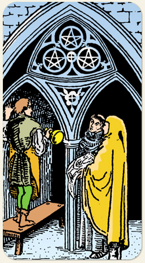

Fala de construções que demandam tempo, dedicação, esforço e dinheiro aplicado. Projetos em andamento, capacidade de realizar projetos, trabalho em equipe, a técnica.
Esbanjar recursos, rejeição ao dinheiro ou celebrar e ser grato por cada recurso e usar os recursos para proporcionar momentos agradáveis. Um é o orçamento para o básico, o Dois é o orçamento para o supérfluo, o Três é o cofrinho, o guardado ao longo prazo, a garantia de levar a obra até o final, é o resultado que dará bons frutos.
Materialização, construção, desenvolvimento, elaboração, atividades manuais. É o momento de rever a planta, conferir o projeto, sair do canteiro de obras e voltar para a fase da planilha.
Possui uma flor parecida com a da bandeira da Morte, possui três pessoas estando uma delas em cima de um banco, como também é representado no Diabo.
Positivo: Obras em movimento, projetos sendo realizados, estudos dando frutos, empresas em crescimento, mesmo que ainda não tenham a estabilidade do quatro, investimentos fazendo sentido, bases sendo criadas, tirar projetos do papel, instituições de valor.
Negativo: Projetos não fluem e problemas surgem um atrás do outro gerando atrasos, uma construção que vai devagar, trabalho improdutivo, a obra não levanta. O negativo de Ouros é a lerdeza, obras faraônicas que se tornam inviáveis.
Espiritualidade: Intervenção onde há um grupo de pessoas envolvidas, situação arquitetada.
Símbolos: Homem, Monge, Artesão, Ferramenta de Entalhe, Pergaminho, Banco de Madeira, Igreja, Ponta de Lança de Lírio, Cruz Celta, Rosa Branca de Cinco Pétalas.
Cores: Vermelho, Laranjado, Amarelo, Azul, Roxo, Branco, Cinza.
Referências: